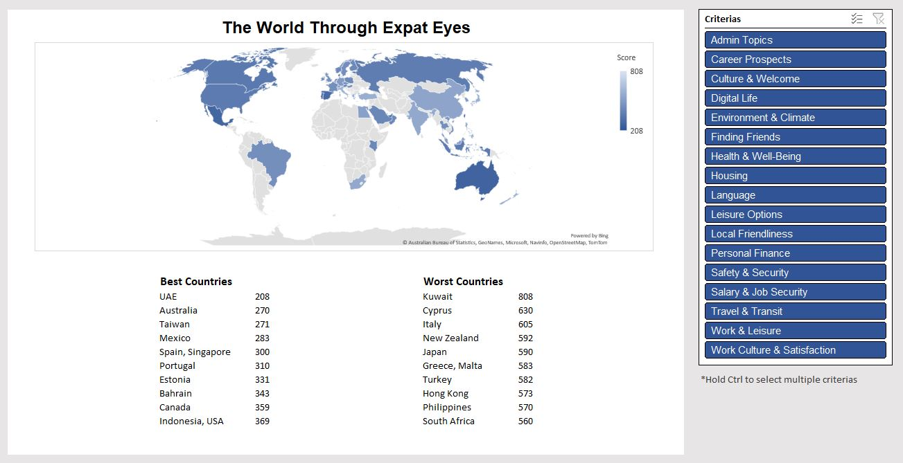
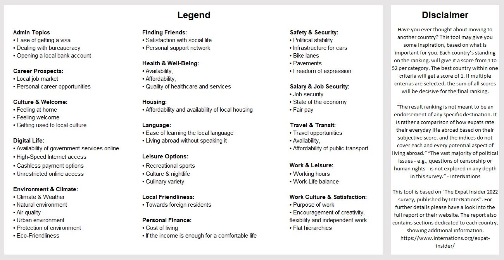

Introduction
After reaching out to InterNations to clarify the use of their copyright protected contents, contained in the expat insider report of 2022, I received the concrete permission to use any data in their report for the purpose of building a tool that will give the user a list of recommended countries to live in, based on the selected criterias.
Importing Data
Since the function to copy contents from the pdf was disabled, I used an online tool to extract the textual information from the PDF. After importing all the data into a structured form in Excel I checked if there are any misspelled countries by putting all the data in one column, applying the “Remove Duplicates Function” and optimally, there should be 52 distinct country names in total.
Data Preperation

There were 53 distinct values in total. After looking through the values, I noticed that Taiwan was the only country misspelled. After correcting that one value, the data set is now cleaned.
Based on the textual information of the raw data, I gave every country a score for each criteria, based on its ranking, using the MATCH() function. Excluded the criterias “Quality of Life”, “Ease of Settling In”, “Working Abroad”, “Expat Essentials”, because these represent all of its subcategories together. Based on the newly created score table, I inserted a pivot table in the existing worksheet. Below there is a table containing the country as well as their respective sum of scores.

Creating the Dashboard
The dashboard itself shows a map, visualizing the countries with high and low resonance to the selected criterias. Below, the best and worst 10-12 countries are listed with their overall score. The top and bottom values of the country score's list is extracted by using the MIN()/MAX(), as well as SMALL()/LARGE() function with an if condition inside. It checks whether a score is already shown in the list, because it happens that two countries will have the same score. In that special case both country names will be concatenated. This is made possible by using the TEXTJOIN() function, with, again, an if condition inside.
The criterias can be selected by the slicer to the left, which was formatted to fit the color schema in the excel file. Underneath the dashboard, a legend is shown, which further explains which factors were covered in each criteria. The disclaimer to the right, gives further information on how to interpret and use tools, as well as more information by InterNations.
